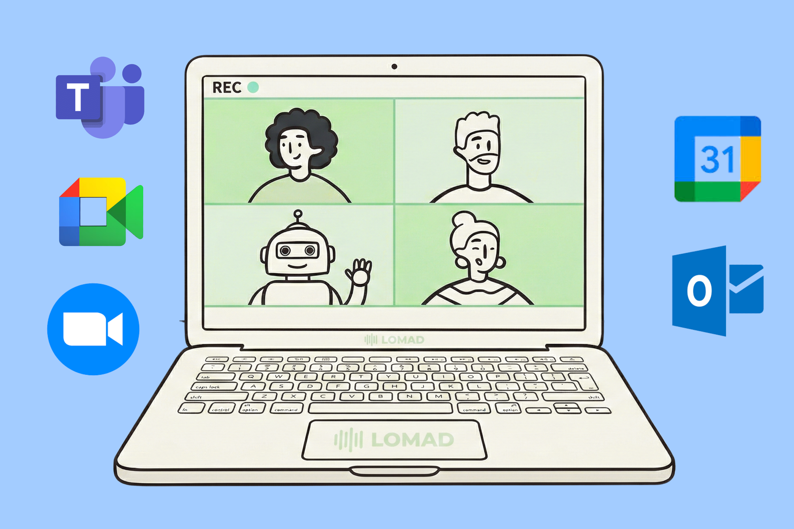
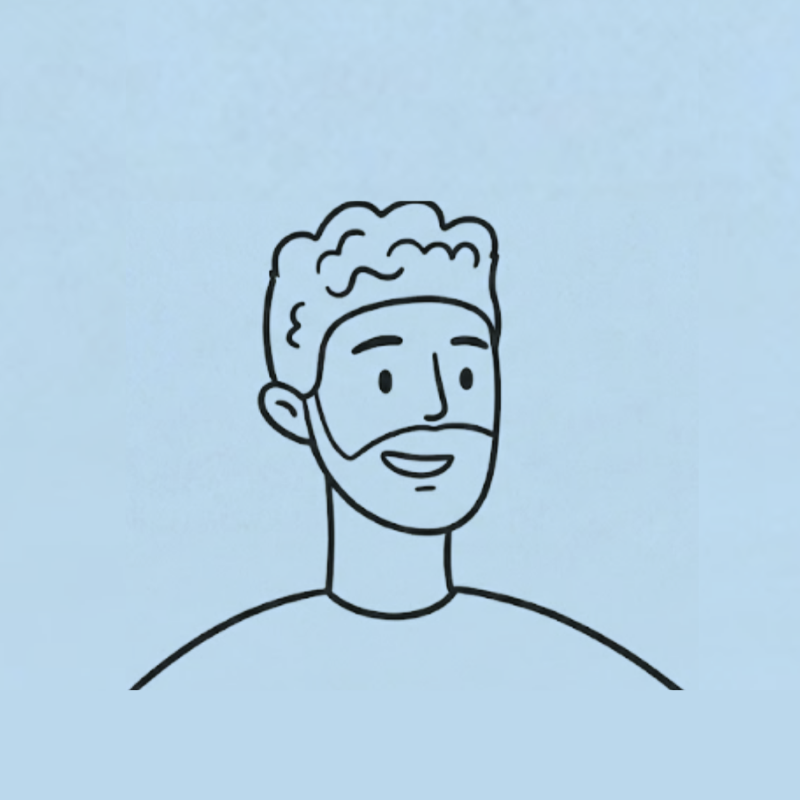
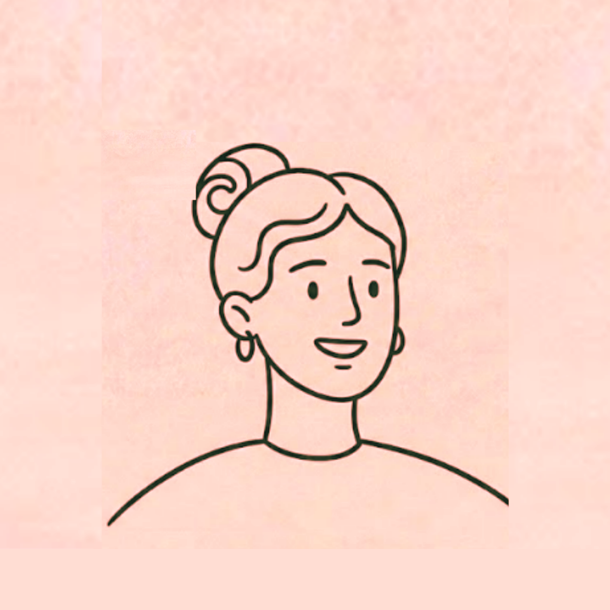
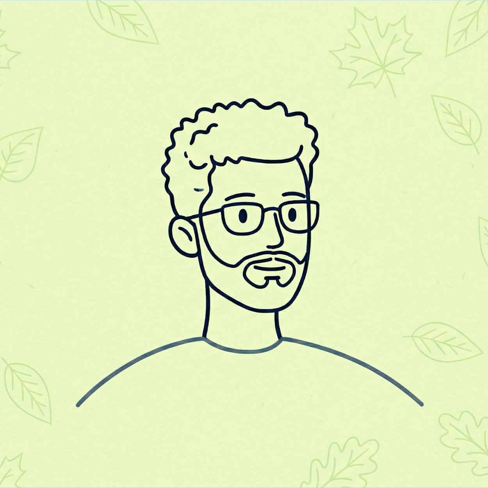
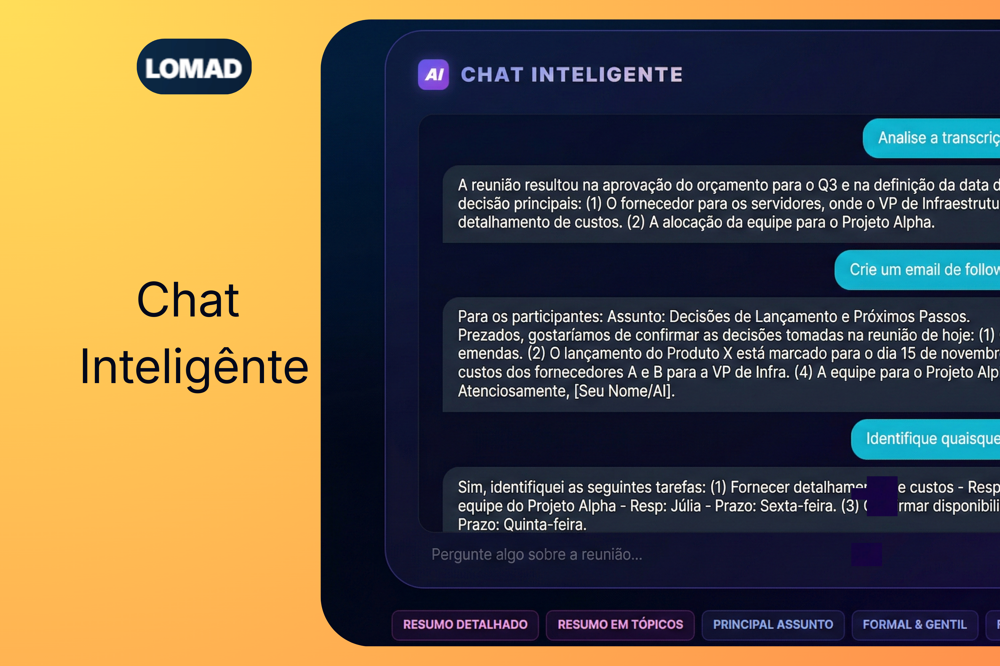
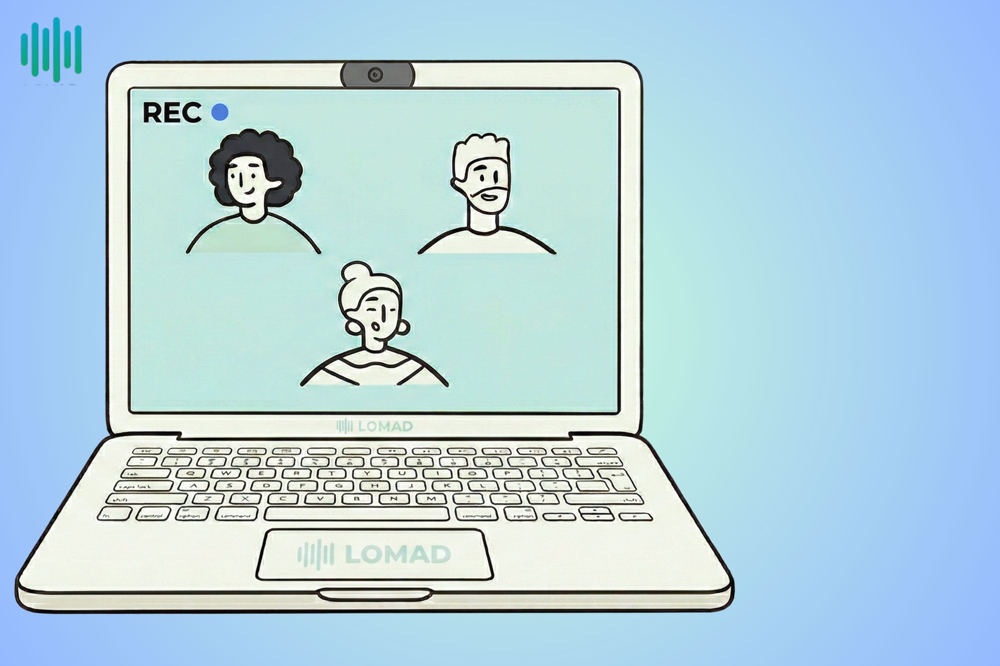

<!DOCTYPE html>
<html lang="pt-BR">

<head>
    <meta charset="UTF-8">
    <meta name="viewport" content="width=device-width, initial-scale=1.0">
    <title>LOMAD - Transcritor Universal Inteligente</title>

    <script src="https://cdn.tailwindcss.com"></script>
    <script>
        tailwind.config = {
            theme: {
                extend: {
                    colors: {
                        brand: { cyan: '#06b6d4', emerald: '#10b981', blue: '#2563eb' },
                        dark: { 950: '#020617', 900: '#0f172a', 800: '#1e293b' }
                    },
                    animation: {
                        'float': 'float 6s ease-in-out infinite',
                        'fade-in-up': 'fadeInUp 0.6s ease-out forwards',
                        'waveform': 'waveform 1.2s ease-in-out infinite',
                        'pulse-slow': 'pulse 3s cubic-bezier(0.4, 0, 0.6, 1) infinite',
                    },
                    keyframes: {
                        float: { '0%, 100%': { transform: 'translateY(0)' }, '50%': { transform: 'translateY(-20px)' } },
                        fadeInUp: { '0%': { opacity: '0', transform: 'translateY(15px)' }, '100%': { opacity: '1', transform: 'translateY(0)' } },
                        waveform: { '0%, 100%': { height: '8px' }, '50%': { height: '28px' } }
                    }
                }
            }
        }
    </script>

    <script crossorigin src="https://unpkg.com/react@18/umd/react.production.min.js"></script>
    <script crossorigin src="https://unpkg.com/react-dom@18/umd/react-dom.production.min.js"></script>
    <script src="https://unpkg.com/@babel/standalone/babel.min.js"></script>

    <style>
        body {
            background-color: #020617;
            color: white;
            overflow-x: hidden;
            font-family: 'Inter', system-ui, sans-serif;
        }

        .glass {
            background: rgba(255, 255, 255, 0.03);
            backdrop-filter: blur(12px);
            border: 1px solid rgba(255, 255, 255, 0.1);
        }

        .hero-gradient {
            background: radial-gradient(circle at 50% 50%, rgba(6, 182, 212, 0.15) 0%, transparent 50%);
        }

        .light-section-shadow {
            box-shadow: 0 -20px 50px rgba(0, 0, 0, 0.5);
        }

        .floating-widget-shadow {
            box-shadow: 0 25px 50px -12px rgba(0, 0, 0, 0.15), 0 0 0 1px rgba(0, 0, 0, 0.05);
        }

        .chat-scrollbar::-webkit-scrollbar {
            width: 4px;
        }

        .chat-scrollbar::-webkit-scrollbar-track {
            background: transparent;
        }

        .chat-scrollbar::-webkit-scrollbar-thumb {
            background: #cbd5e1;
            border-radius: 4px;
        }
    </style>
</head>

<body>
    <div id="root"></div>

    <script type="text/babel">
        const { useState, useEffect, useRef } = React;

        // COMPONENTE: Pílula Neon (Ajustado para alinhamento perfeito)
        const HighlightPill = ({ children, theme = 'dark', pullLeft = false }) => {
            const innerBg = theme === 'dark' ? 'bg-[#020617]' : 'bg-white';
            const glowColor = 'bg-brand-cyan/80';
            return (
                <span className={`relative flex items-center justify-center whitespace-nowrap align-middle transition-all duration-300 ${pullLeft ? 'lg:-ml-8 mx-1' : 'mx-1 md:mx-2'}`}>
                    <span className={`absolute inset-0 ${glowColor} rounded-full blur-[8px] md:blur-[12px] opacity-70 animate-pulse-slow`}></span>
                    <span className={`absolute inset-0 bg-brand-cyan rounded-full`}></span>
                    <span className={`absolute inset-[2px] md:inset-[3px] ${innerBg} rounded-full`}></span>
                    <span className="relative z-10 block px-5 py-2.5 md:px-8 md:py-3.5 font-black flex items-center justify-center text-transparent bg-clip-text bg-gradient-to-r from-cyan-400 to-emerald-400 leading-none">
                        {children}
                    </span>
                </span>
            );
        };

        const WordRotator = () => {
            const words = ["Reuniões", "E-mails", "Brainstorms", "Vendas"];
            const [index, setIndex] = useState(0);
            useEffect(() => {
                const interval = setInterval(() => setIndex((prev) => (prev + 1) % words.length), 2500);
                return () => clearInterval(interval);
            }, []);
            return <span className="transition-all duration-500">{words[index]}</span>;
        };

        const SimpleTranscriptLine = ({ text, delay }) => {
            const [isVisible, setIsVisible] = useState(false);
            useEffect(() => {
                const timer = setTimeout(() => setIsVisible(true), delay);
                return () => clearTimeout(timer);
            }, [delay]);
            return isVisible ? <span className="animate-fade-in-up block mb-2">{text}</span> : null;
        };

        const ScrollStep = ({ onStepEnter, children, stepIndex }) => {
            const ref = useRef(null);
            useEffect(() => {
                const observer = new IntersectionObserver(([entry]) => { if (entry.isIntersecting) onStepEnter(stepIndex); }, { rootMargin: '-40% 0px -40% 0px' });
                if (ref.current) observer.observe(ref.current);
                return () => { if (ref.current) observer.unobserve(ref.current); };
            }, [stepIndex, onStepEnter]);
            return <div ref={ref} className="min-h-[50vh] lg:min-h-[70vh] flex flex-col justify-center py-10">{children}</div>;
        };

        const MeetingSimulator = ({ activeStep }) => {
            return (
                <div className="w-full max-w-[480px] mx-auto h-[280px] md:h-[360px] bg-[#111827] rounded-2xl md:rounded-3xl border border-slate-800 shadow-2xl overflow-hidden relative transition-all duration-700">
                    <div className={`absolute top-0 w-full p-3 md:p-4 flex justify-between items-center z-20 bg-gradient-to-b from-black/80 to-transparent transition-opacity duration-300 ${activeStep === 3 || activeStep === 0 ? 'opacity-0' : 'opacity-100'}`}>
                        <div className="flex gap-2 items-center"><div className="w-2 h-2 bg-red-500 rounded-full animate-pulse"></div><span className="text-white text-[10px] md:text-xs font-bold">00:{activeStep * 15 + 12}</span></div>
                        <div className="px-2 py-1 bg-slate-800/80 rounded-md text-[9px] md:text-[10px] text-white backdrop-blur border border-slate-700">4 Participantes</div>
                    </div>
                    <div className={`absolute inset-0 transition-opacity duration-700 p-3 pt-12 md:p-4 md:pt-14 ${activeStep === 0 ? 'opacity-100 z-10' : 'opacity-0 z-0 pointer-events-none'}`}>
                        <div className="w-full h-full bg-slate-800 rounded-xl md:rounded-2xl relative overflow-hidden border border-slate-700">
                            {/* USE CAMINHOS RELATIVOS COMO "./NOME_DA_IMAGEM.png" */}
                            
                        </div>
                    </div>
                    <div className={`absolute inset-0 transition-opacity duration-700 p-3 pt-12 md:p-4 md:pt-14 ${activeStep === 1 || activeStep === 2 ? 'opacity-100 z-10' : 'opacity-0 z-0 pointer-events-none'}`}>
                        <div className="grid grid-cols-2 grid-rows-2 gap-2 md:gap-3 h-full">
                            <div className="bg-slate-800 rounded-xl relative overflow-hidden"></div>
                            <div className="bg-slate-800 rounded-xl relative overflow-hidden"></div>
                            <div className="bg-slate-800 rounded-xl relative overflow-hidden"></div>
                            <div className="bg-slate-900 rounded-xl relative flex flex-col items-center justify-center p-2 border border-slate-700 text-center"><div className="w-10 h-10 bg-cyan-500/20 rounded-full flex items-center justify-center mb-2 animate-pulse-slow text-lg">🤖</div><div className="text-[9px] text-cyan-400 font-bold uppercase tracking-wider">LOMAD AI BOT</div><div className="text-[8px] text-slate-400 mt-1">Sincronizado</div></div>
                        </div>
                    </div>
                    <div className={`absolute inset-0 transition-opacity duration-700 bg-slate-900 ${activeStep === 3 ? 'opacity-100 z-10' : 'opacity-0 z-0 pointer-events-none'}`}>
                        
                    </div>
                </div>
            );
        };

        const EcosystemSection = () => {
            const [activeTab, setActiveTab] = useState(0);

            // CORRIGIDO: Links devem ser relativos ou usar barras normais "/"
            const features = [
                { title: "Gravação Integrada", desc: "Capture a chamada pelo navegador com nossa ferramenta nativa, de forma imersiva e livre de bots.", img: "./REC.png" },
                { title: "O LOMAD em seu Smartphone", desc: "Leve o LOMAD para onde você for. Grave, transcreva e acompanhe reuniões presenciais usando seu celular.", img: "./FOTO_MOBILE.png" },
                { title: "Produtividade por E-mail", desc: "Ao final da reunião, receba em sua caixa de entrada um relatório estruturado com os pontos-chave e o resumo completo.", img: "./FOTO_EMAIL.png" },
                { title: "Ecossistema Completo", desc: "Acesse todos os seus transcritos em um dashboard intuitivo, organizando sua semana e compromissos com facilidade.", img: "./FOTO_INTEGRACOES.png" }
            ];

            return (
                <section className="bg-white relative w-full py-24 md:py-32 rounded-t-[3rem] md:rounded-t-[4rem] z-40 -mt-10 border-t border-slate-200">
                    <div className="max-w-7xl mx-auto px-6">
                        <h2 className="text-3xl md:text-5xl font-black text-slate-900 mb-16 text-center lg:text-left">Integre IA ao seu dia a dia</h2>
                        <div className="flex flex-col lg:flex-row gap-12 items-center">
                            <div className="w-full lg:w-1/2 flex justify-center order-1">
                                <div className="w-full max-w-[500px] aspect-[4/3] bg-slate-100 rounded-[2rem] overflow-hidden shadow-2xl border border-slate-200 relative">
                                    {features.map((f, i) => (
                                        
                                    ))}
                                </div>
                            </div>
                            <div className="w-full lg:w-1/2 grid grid-cols-1 sm:grid-cols-2 gap-4 order-2">
                                {features.map((item, index) => (
                                    <div key={index} onMouseEnter={() => setActiveTab(index)} className={`p-6 rounded-2xl border-2 transition-all cursor-pointer min-h-[160px] flex flex-col justify-between ${activeTab === index ? 'border-cyan-500 bg-cyan-50/30' : 'border-slate-100 bg-slate-50 hover:border-slate-200'}`}>
                                        <div>
                                            <div className="flex justify-between items-center mb-4 text-slate-900">
                                                <h3 className="font-bold text-lg leading-tight">{item.title}</h3>
                                                <svg className={`w-5 h-5 transition-transform ${activeTab === index ? 'text-cyan-500 translate-x-1' : 'text-slate-300'}`} fill="none" stroke="currentColor" viewBox="0 0 24 24"><path strokeLinecap="round" strokeLinejoin="round" strokeWidth="2" d="M14 5l7 7m0 0l-7 7m7-7H3" /></svg>
                                            </div>
                                            <p className="text-slate-500 text-sm leading-relaxed">{item.desc}</p>
                                        </div>
                                    </div>
                                ))}
                            </div>
                        </div>
                    </div>
                </section>
            );
        };

        const App = () => {
            const [scrollyStep, setScrollyStep] = useState(0);

            return (
                <div className="min-h-screen selection:bg-cyan-500/30">
                    <nav className="fixed top-0 w-full z-50 p-4 md:p-6">
                        <div className="max-w-6xl mx-auto px-4 md:px-6 py-3 md:py-4 glass rounded-full flex items-center justify-between shadow-2xl">
                            <div className="flex items-center gap-2 group cursor-pointer">
                                <div className="w-6 h-6 md:w-8 md:h-8 bg-gradient-to-br from-cyan-500 to-emerald-500 rounded-lg group-hover:rotate-12 transition-transform"></div>
                                <span className="text-lg md:text-xl font-black tracking-tighter text-white">LOMAD</span>
                            </div>
                            <button className="px-4 md:px-6 py-2 bg-white text-dark-950 rounded-full font-bold text-xs md:text-sm hover:bg-cyan-50 transition-all">Testar Grátis</button>
                        </div>
                    </nav>

                    <header className="relative pt-36 md:pt-44 pb-16 md:pb-20 px-6 hero-gradient bg-dark-950 flex justify-center items-center">
                        <div className="max-w-5xl mx-auto text-center space-y-6 md:space-y-8 w-full flex flex-col justify-center items-center">
                            <div className="inline-flex items-center gap-2 px-3 py-1 rounded-full border border-cyan-500/30 bg-cyan-500/10 text-cyan-400 text-[10px] md:text-xs font-bold uppercase tracking-widest">
                                <span>✨ Powered by Gemini</span>
                            </div>
                            <h1 className="text-4xl md:text-6xl lg:text-7xl font-black tracking-tight text-white flex flex-col items-center justify-center gap-3 md:gap-4 w-full text-white">
                                <span>Inteligência Real para</span>
                                <span className="flex flex-wrap items-center justify-center gap-x-3 gap-y-3 w-full">
                                    <span>suas</span>
                                    <HighlightPill theme="dark"><WordRotator /></HighlightPill>
                                </span>
                            </h1>
                            <p className="text-slate-400 text-base md:text-xl max-w-2xl mx-auto leading-relaxed mt-4 font-medium">Capture cada detalhe das suas reuniões e chamadas. O LOMAD grava interativamente, transcreve e gera resumos com tarefas automáticas para você focar na conversa.</p>
                            <button className="px-8 md:px-10 py-3 md:py-4 bg-gradient-to-r from-cyan-500 to-emerald-500 text-white rounded-2xl font-bold text-base md:text-lg shadow-xl shadow-cyan-500/20 hover:scale-105 transition-all mt-4">Começar agora</button>
                        </div>
                    </header>

                    <section className="bg-slate-50 relative w-full pt-20 md:pt-32 pb-24 md:pb-32 -mt-10 rounded-t-[3rem] md:rounded-t-[4rem] z-20 light-section-shadow">
                        <div className="max-w-7xl mx-auto px-6 md:px-12 flex flex-col lg:flex-row items-center justify-center lg:justify-between gap-16 lg:gap-8 w-full">
                            <div className="w-full lg:w-1/2 max-w-2xl z-10 text-center lg:text-left mx-auto lg:mx-0">
                                <h2 className="text-4xl md:text-5xl lg:text-[3.5rem] font-black tracking-tight text-slate-900 flex flex-col items-center lg:items-start gap-4 md:gap-5 w-full text-slate-900">
                                    <span>Transcrições ao vivo</span>
                                    <span className="flex flex-wrap items-center justify-center lg:justify-start gap-x-2 gap-y-3 w-full">
                                        <HighlightPill theme="light" pullLeft={true}>sem nenhum bot</HighlightPill>
                                        <span>na sua sala.</span>
                                    </span>
                                </h2>
                                <div className="flex justify-center lg:justify-start mt-6 text-slate-600">
                                    <ul className="space-y-4 pt-4 inline-block text-left">
                                        <li className="flex items-center gap-3 text-base md:text-lg font-medium"><div className="w-6 h-6 rounded-full bg-emerald-100 flex items-center justify-center shrink-0"><svg className="w-4 h-4 text-emerald-600" fill="none" stroke="currentColor" viewBox="0 0 24 24"><path strokeLinecap="round" strokeLinejoin="round" strokeWidth="3" d="M5 13l4 4L19 7"></path></svg></div>Grave diretamente da aba do seu navegador sem interrupções</li>
                                        <li className="flex items-center gap-3 text-base md:text-lg font-medium"><div className="w-6 h-6 rounded-full bg-emerald-100 flex items-center justify-center shrink-0"><svg className="w-4 h-4 text-emerald-600" fill="none" stroke="currentColor" viewBox="0 0 24 24"><path strokeLinecap="round" strokeLinejoin="round" strokeWidth="3" d="M5 13l4 4L19 7"></path></svg></div>100% de privacidade e sigilo nas suas pautas importantes</li>
                                    </ul>
                                </div>
                            </div>
                            <div className="w-full lg:w-1/2 relative flex justify-center lg:justify-end mt-12 lg:mt-0 mx-auto lg:mx-0">
                                <div className="relative w-full max-w-[420px] lg:max-w-[480px] lg:mr-10">
                                    
                                    <div className="absolute top-1/2 -translate-y-1/2 -right-4 lg:-right-14 w-[280px] sm:w-[320px] bg-white rounded-2xl floating-widget-shadow z-20 flex flex-col h-[300px] md:h-[340px]">
                                        <div className="flex items-center justify-between p-3 md:p-4 border-b border-slate-100 bg-white rounded-t-2xl">
                                            <div className="flex items-center gap-2 bg-slate-50 px-2.5 py-1.5 rounded-lg border border-slate-200 text-slate-700">
                                                <div className="w-2 h-2 bg-red-500 rounded-full animate-pulse shadow-[0_0_8px_rgba(239,68,68,0.6)]"></div>
                                                <span className="text-[10px] md:text-xs font-bold uppercase tracking-wide">Live Transcript</span>
                                            </div>
                                            <button className="text-[10px] md:text-xs font-bold text-cyan-600">✨ LOMAD</button>
                                        </div>
                                        <div className="p-5 flex-1 overflow-y-auto chat-scrollbar bg-white rounded-b-2xl text-xs md:text-sm text-slate-600 leading-relaxed font-medium">
                                            <SimpleTranscriptLine delay={500} text="Ouvindo a conversa ativamente..." />
                                            <SimpleTranscriptLine delay={3000} text="Convertendo áudio em texto e identificando falantes..." />
                                            <SimpleTranscriptLine delay={5500} text="Sintetizando as pautas abordadas pela equipe..." />
                                        </div>
                                    </div>
                                </div>
                            </div>
                        </div>
                    </section>

                    <section className="bg-dark-950 relative w-full py-32 border-t border-slate-800 flex justify-center">
                        <div className="max-w-7xl mx-auto px-6 w-full flex flex-col items-center">
                            <div className="text-center mb-10">
                                <h2 className="text-3xl md:text-4xl lg:text-5xl font-bold text-white mb-4 leading-tight">Transcrição utilizando BOT diretamente em suas reuniões</h2>
                                <p className="text-slate-400 text-base md:text-lg max-w-2xl mx-auto">Automatize a captura de áudio com o nosso Bot inteligente, que participa das suas chamadas e documenta tudo para você não perder nenhum detalhe.</p>
                            </div>
                            <div className="flex flex-col lg:flex-row gap-8 lg:gap-16 items-start justify-center w-full">
                                <div className="flex-1 lg:max-w-xl space-y-8 pb-16">
                                    <ScrollStep onStepEnter={setScrollyStep} stepIndex={0}>
                                        <h3 className="text-2xl font-bold text-white mb-2">1. Sincronização e Setup</h3>
                                        <p className="text-slate-400 mb-4">Conecte sua agenda e centralize todos os compromissos em um único painel seguro e intuitivo, sem precisar enviar links manualmente.</p>
                                        <ul className="space-y-3 text-sm text-slate-500 font-medium border-l border-slate-800 pl-4 py-1">
                                            <li className="flex items-start gap-3"><div className="mt-1.5 w-1.5 h-1.5 rounded-full bg-cyan-500 shrink-0"></div><span>Integração oficial homologada com <strong>Google Calendar</strong> e <strong>Microsoft Outlook</strong>.</span></li>
                                            <li className="flex items-start gap-3"><div className="mt-1.5 w-1.5 h-1.5 rounded-full bg-cyan-500 shrink-0"></div><span>Sincronização em tempo real de novas reuniões criadas, adiamentos ou cancelamentos.</span></li>
                                            <li className="flex items-start gap-3"><div className="mt-1.5 w-1.5 h-1.5 rounded-full bg-cyan-500 shrink-0"></div><span>Controle total do organizador: escolha quais eventos deseja que o Bot participe e grave.</span></li>
                                        </ul>
                                    </ScrollStep>
                                    <ScrollStep onStepEnter={setScrollyStep} stepIndex={1}>
                                        <h3 className="text-2xl font-bold text-white mb-2">2. Participação do Bot</h3>
                                        <p className="text-slate-400 mb-4">No horário marcado, o Bot entra na sala pontualmente e atua como seu assistente de documentação silencioso.</p>
                                        <ul className="space-y-3 text-sm text-slate-500 font-medium border-l border-slate-800 pl-4 py-1">
                                            <li className="flex items-start gap-3"><div className="mt-1.5 w-1.5 h-1.5 rounded-full bg-cyan-500 shrink-0"></div><span>Compatibilidade abrangente com as maiores plataformas (Meet, Teams, Zoom, etc).</span></li>
                                            <li className="flex items-start gap-3"><div className="mt-1.5 w-1.5 h-1.5 rounded-full bg-cyan-500 shrink-0"></div><span>Ingresso inteligente na sala de espera ou entrada direta se o provedor permitir.</span></li>
                                            <li className="flex items-start gap-3"><div className="mt-1.5 w-1.5 h-1.5 rounded-full bg-cyan-500 shrink-0"></div><span>Aviso transparente e legal em forma de mensagem para garantir a ciência de todos.</span></li>
                                        </ul>
                                    </ScrollStep>
                                    <ScrollStep onStepEnter={setScrollyStep} stepIndex={2}>
                                        <h3 className="text-2xl font-bold text-white mb-2">3. Inteligência em Tempo Real</h3>
                                        <p className="text-slate-400 mb-4">O LOMAD capta e processa o áudio multicanal estruturando os debates, garantindo qualidade para não perder detalhes da sua negociação.</p>
                                        <ul className="space-y-3 text-sm text-slate-500 font-medium border-l border-slate-800 pl-4 py-1">
                                            <li className="flex items-start gap-3"><div className="mt-1.5 w-1.5 h-1.5 rounded-full bg-cyan-500 shrink-0"></div><span>Diarização de locutores avançada: a IA separa perfeitamente "Quem disse O quê?".</span></li>
                                            <li className="flex items-start gap-3"><div className="mt-1.5 w-1.5 h-1.5 rounded-full bg-cyan-500 shrink-0"></div><span>Captação nítida adaptável mesmo com pequenos ruídos ao fundo durante a conferência.</span></li>
                                            <li className="flex items-start gap-3"><div className="mt-1.5 w-1.5 h-1.5 rounded-full bg-cyan-500 shrink-0"></div><span>Tratamento seguro e criptografado dos dados de ponta a ponta enquanto a reunião ocorre.</span></li>
                                        </ul>
                                    </ScrollStep>
                                    <ScrollStep onStepEnter={setScrollyStep} stepIndex={3}>
                                        <h3 className="text-2xl font-bold text-cyan-400 mb-2">4. Resultados e Entregáveis</h3>
                                        <p className="text-slate-300 mb-4">Assim que a gravação é encerrada, a suíte do LOMAD disponibiliza o material trabalhado no seu dashboard.</p>
                                        <ul className="space-y-3 text-sm text-cyan-200/60 font-medium border-l border-cyan-500/30 pl-4 py-1">
                                            <li className="flex items-start gap-3 text-cyan-500"><div className="mt-1.5 w-1.5 h-1.5 rounded-full bg-emerald-400 shrink-0 shadow-[0_0_8px_rgba(52,211,153,0.8)]"></div><span>Resumo executivo impecável separando os principais tópicos abordados.</span></li>
                                            <li className="flex items-start gap-3 text-cyan-500"><div className="mt-1.5 w-1.5 h-1.5 rounded-full bg-emerald-400 shrink-0 shadow-[0_0_8px_rgba(52,211,153,0.8)]"></div><span>Mapeamento assertivo de pendências e tarefas (Action Items).</span></li>
                                            <li className="flex items-start gap-3 text-cyan-500"><div className="mt-1.5 w-1.5 h-1.5 rounded-full bg-emerald-400 shrink-0 shadow-[0_0_8px_rgba(52,211,153,0.8)]"></div><span>Transcrição em abas com pesquisa e opções para exportação.</span></li>
                                            <li className="flex items-start gap-3 text-cyan-500"><div className="mt-1.5 w-1.5 h-1.5 rounded-full bg-emerald-400 shrink-0 shadow-[0_0_8px_rgba(52,211,153,0.8)]"></div><span>Disparos de E-mail consolidados direto para a sua caixa de entrada.</span></li>
                                        </ul>
                                    </ScrollStep>
                                </div>
                                <div className="flex-1 sticky top-24 lg:top-[25vh] z-20 flex justify-center max-w-xl mx-auto lg:mx-0"><MeetingSimulator activeStep={scrollyStep} /></div>
                            </div>
                        </div>
                    </section>

                    <EcosystemSection />
                    <footer className="bg-dark-900 py-12 text-center border-t border-slate-800 text-slate-500">© 2026 LOMAD AI.</footer>
                </div>
            );
        };

        const root = ReactDOM.createRoot(document.getElementById('root'));
        root.render(<App />);
    </script>
</body>

</html>